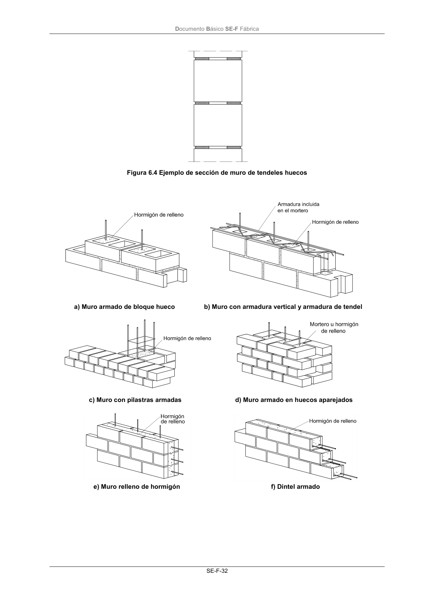

DB-SE-F Fábrica · edición 2019-12-20 · capa oficial
Documento DB-SE-F-oficial · SHA-256 del PDF e3e0805c3b4c307519c26dc34c3fdbf143d842edd013c91b0f52d2c73403d91c
Copia fiel del PDF fuente · Fuente oficial
Ficha de la disposición en la fuente oficial
Formatos: JSON del segmento · Markdown
6 Soluciones constructivas 6.1 Tipos de muros 6.1 Tipos de muros 1 En este capítulo se muestran figuras de muros de una hoja, capuchinos, doblados, careados, de tendel hueco y de revestimiento y de armado de fábricas. Figura 6.1 Ejemplos de secciones de muros de una hoja Figura 6.2 Ejemplo de secciones de muros capuchinos Figura 6.3 Ejemplo de sección de muro doblado Documento Básico SE-F Fábrica SE-F-32 Figura 6.4 Ejemplo de sección de muro de tendeles huecos a) Muro armado de bloque hueco b) Muro con armadura vertical y armadura de tendel c) Muro con pilastras armadas d) Muro armado en huecos aparejados e) Muro relleno de hormigón f) Dintel armado Documento Básico SE-F Fábrica SE-F-33 g) Armadura en tendeles de piezas acanaladas h) Muros con armadura de tendel Figura 6.5 Ejemplos de disposiciones de armado de fábricas Documento Básico SE-F Fábrica SE-F-35
